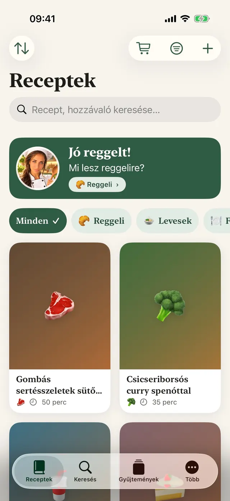
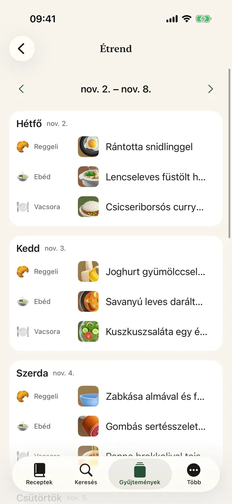
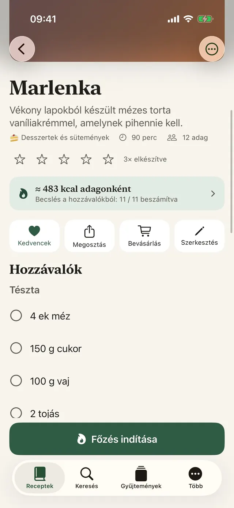
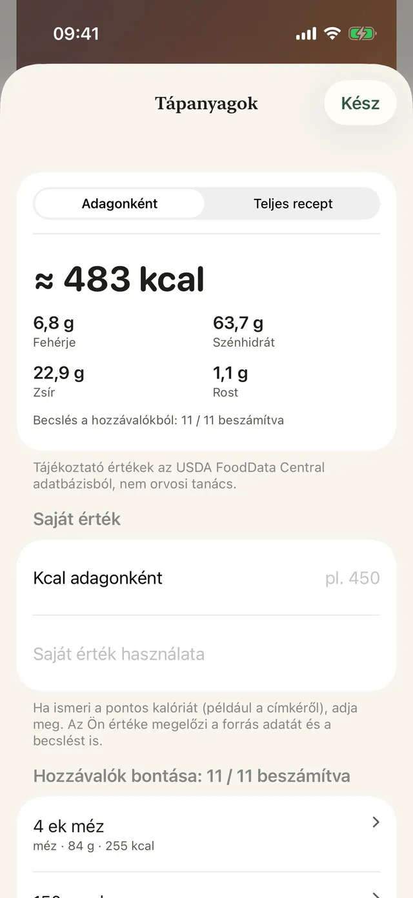
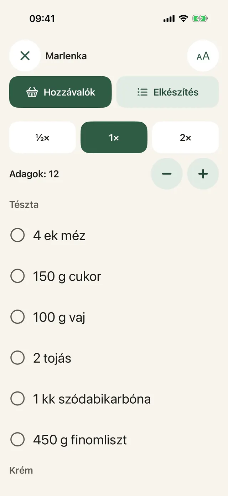
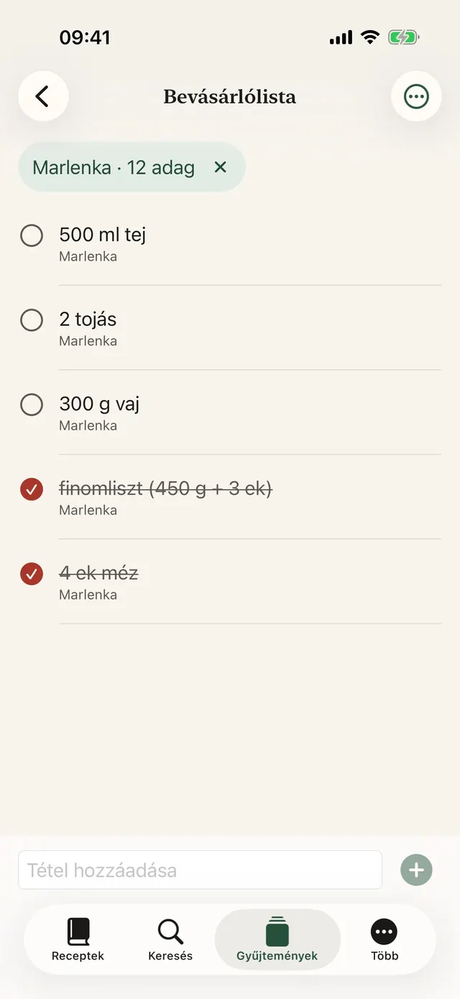
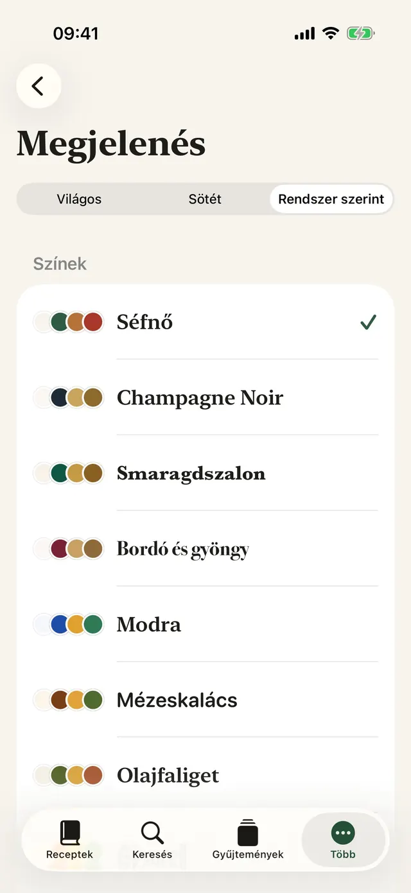
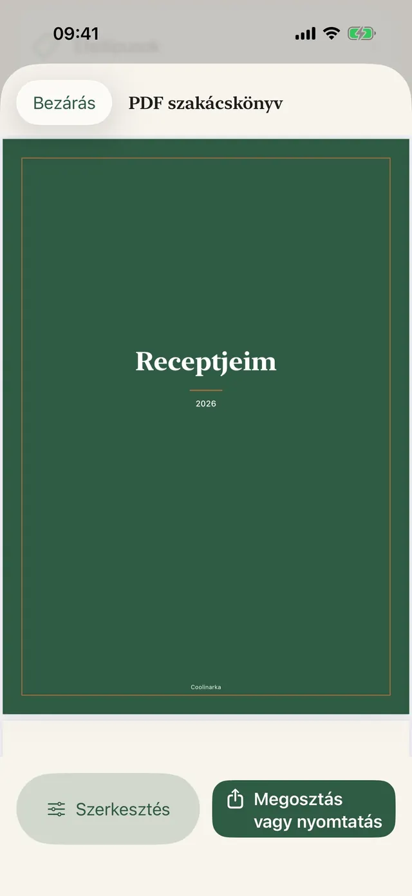
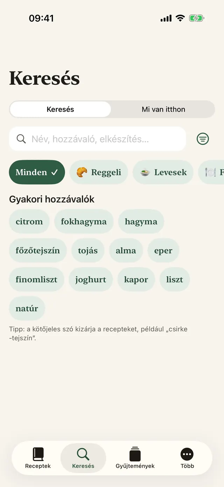
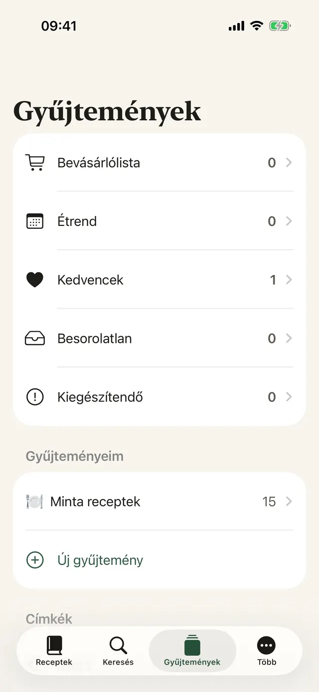

Egy koppintással elmented
Az Instagramon, a Facebookon vagy a Safariban koppints a Megosztásra, és válaszd a Coolinarkát.
Mentsd el a receptet az Instagramról, a Facebookról, a webről vagy egy videóból. A Coolinarka áttekinthető hozzávalókat és lépéseket készít belőle, és főzés közben lépésről lépésre végigvezet.
iPhone-ra és iPadre, ingyen. Az androidos változat hamarosan a Google Playen is megjelenik.


Így néz ki egy recept egy közösségi oldal bejegyzésében. Egy koppintás, és minden a helyére kerül, az átszámolható adagokkal együtt.
😍😍 Penne brokkolival tejszínes mártásban!!! 400 g penne, 1 brokkoli, 250 ml főzőtejszín, 2 gerezd fokhagyma, 50 g parmezán, só és bors ... A pennét a csomagolás szerint megfőzzük, az utolsó 4 percben hozzáadjuk a brokkolirózsákat. Olajon röviden megpirítjuk a fokhagymát, felöntjük a tejszínnel, és átmelegítjük. A leszűrt tésztát a brokkolival együtt elkeverjük a mártással, és megszórjuk parmezánnal. 🔥🔥 #penne #food
Egyszerű tészta, amelyet a gyerekek is szeretnek.
Mintarecept az appból. A valódi bejegyzések gyakran még kaotikusabbak, de a Coolinarka képernyőképből vagy videóból is megbirkózik velük.
Nagy betűk, egyetlen lépés a képernyőn, és a kijelző nem alszik ki. Az időzítőt egy koppintással indítod, akkor is, ha lisztes a kezed.
A bemutatóban gyorsítva fut az időzítő.
A pennét a csomagolás szerint megfőzzük, az utolsó 4 percben hozzáadjuk a brokkolirózsákat.
A több receptből származó hozzávalók összeadódnak. Válts országot, és nézd, ahogy a keresett szó lefordul az üzlet nyelvére, akkor is, ha a recept más nyelvű.
A kosárba az üzletben teszed a tételt. Az app nem fér hozzá az üzletbeli fiókodhoz. Az elérhetőség a címedtől függ.
Egy budapesti Pozsonyban, egy debreceni Bécsben. Az idegen üzletben elég egy apró tévedés, és egészen más kerül a kosárba. A Coolinarka az üzlet nyelvén keres, hogy ez veled ne forduljon elő. Tudod, mit vinnél haza?
Kilenc téma saját ikonnal, sötét mód és nagyobb betűk. Válassz, és az egész oldal megváltozik, pont úgy, mint az app.
Valódi képernyők, azon a nyelven, amelyen ezt az oldalt olvasod.









Az Instagramon, a Facebookon vagy a Safariban koppints a Megosztásra, és válaszd a Coolinarkát.
Videóból vagy képernyőfelvételből recept lesz, a beszédet közvetlenül a telefon írja át szöveggé.
Tervezd meg az egész hetet, az üres helyeket töltsd ki a kedvenceiddel, és mindent küldj a bevásárlólistára.
Ételtípusok, címkék, kedvencek és saját gyűjtemények.
Név, hozzávalók vagy elkészítés szerint, ékezetektől függetlenül.
A Mit főzzünk ma widget a főképernyőn és a zárolási képernyőn, valamint a Siri: „Mit főzzek a Coolinarka szerint”.
A címzett a fotóval együtt nyitja meg a Coolinarkában, az értékeléseid és a jegyzeteid nincsenek benne.
Vágás, forgatás és szűrők.
A receptek az iCloudon keresztül szinkronizálódnak az azonos Apple-fiókot használó eszközök között.
Készíts mentést a gyűjteményedről, vagy vidd át egy másik appba.
A mintareceptekkel és a kalóriabecsléssel együtt.
Az app fiók, reklám és követés nélkül működik. A receptek az eszközödön és a privát iCloudodban maradnak, a fejlesztő nem fér hozzájuk.
A receptek, az importálás, az exportálás, a mentések, az iCloud és a főzési mód semmibe sem kerülnek. A Plus egyszeri vásárlás előfizetés nélkül, és megosztható a családdal.
Az értékek tájékoztató jellegűek, és nem minősülnek orvosi tanácsnak. A számítás az eszközön történik.
Töltsd le a Coolinarkát, és mentsd el az első receptedet még ma.
iPhone-ra és iPadre, ingyen. Az androidos változat hamarosan a Google Playen is megjelenik.